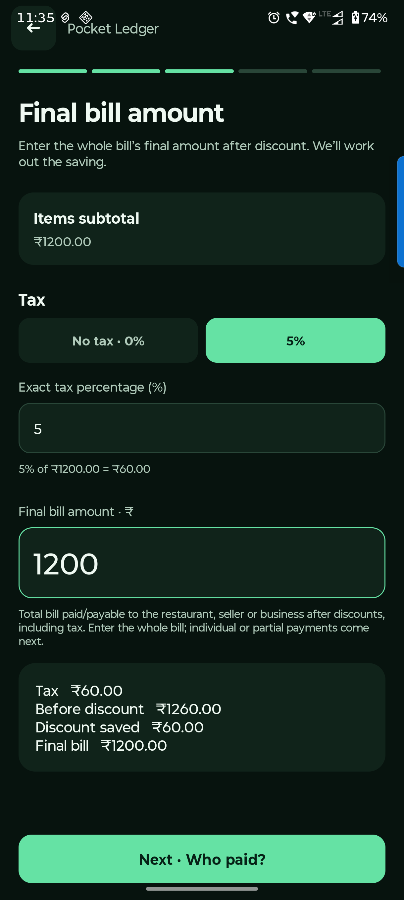
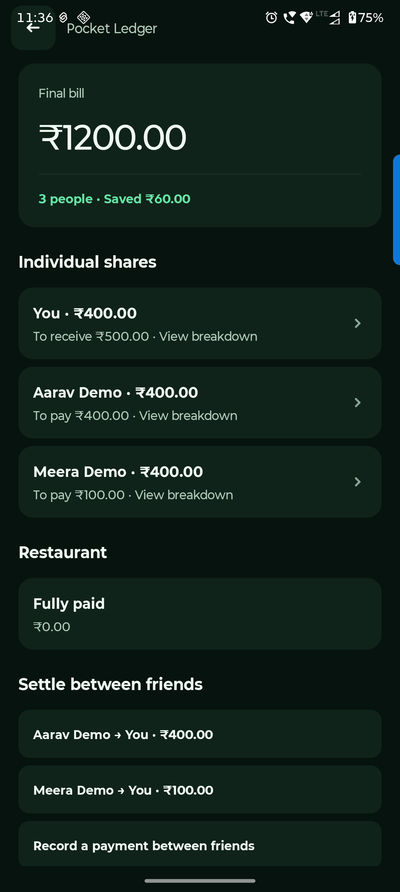

Android handbook · 6.1.0-preview.14
Pay & settle a split bill.
Tax, discounts, multiple payers and reimbursements.
Split bill → Next · Tax & discount
Confirm the whole final bill.
Tax and discount apply to the bill total. Each person’s actual payment is entered in the next step.
Confirm the tax rate
Choose No tax · 0%, 5%, or enter the exact percentage. Use 0% when item prices already include tax.
Enter the final amount after discount
Use the whole final amount payable to the restaurant. Leave it blank if there is no discount. Check the calculated saving.
Check before moving on
Make sure the tax, final bill and discount agree with the receipt. Then choose Next · Who paid?
The final payable is different from the amount already paid. Partial and multiple restaurant payments belong to Who paid the restaurant?

Who paid the restaurant? → Add restaurant payment
Record who actually paid.
One person can cover the bill, or several people can pay parts. The splitter tracks the restaurant balance first.
Add the actual payer and amount
Record only money already paid to the restaurant. For two payers, add two payment records.
Review the split before saving
Review split shows each person’s share. Save split bill keeps it on this device. A still-unpaid restaurant amount can be paid later.
Read the reimbursement suggestions
Once the restaurant is fully paid, the app suggests who should reimburse whom. Tap a person to inspect their food, tax and discount breakdown.
Until the restaurant is fully paid, deal with Restaurant due first. A suggestion is a calculation; the app does not move real money.

Saved split bill → Settle between friends
Track a partial reimbursement.
After someone pays a friend back, record what actually happened. The remaining suggestion adjusts automatically.
Tap the right suggestion
Choose the sender and receiver. You can also use Record a payment between friends.
Change the amount for a partial payment
The form may suggest the full outstanding amount. Replace it with the actual amount received, then Record payment.
Check what remains
The saved bill keeps recorded restaurant and friend payments. Tap an incorrect payment to undo it. Undo friend payments before changing the bill’s shares.
This records a split-bill settlement only. It does not change your bank/cash/card balances or Lena / Dena ledger. Record a real account movement separately if you need it in your ledger.
Questions you might have.
Why are there no reimbursement suggestions yet?
Check Restaurant due. Friend-to-friend suggestions appear once the restaurant is fully paid.
Why can I not edit the bill’s shares?
Undo existing friend payment records first. Restaurant payments are retained for your review. This prevents earlier settlements from being silently applied to changed shares.